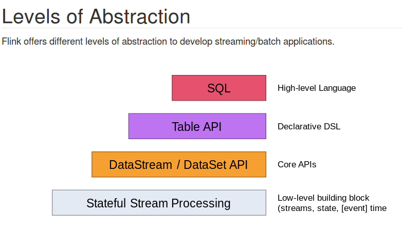

iwos_flink流数据处理
Table of Contents
2 应用开发
2.1 说明
- 微服务
- 编程语言, java, python都可以, java文档更全
2.2 任务类型
- 流数据实时处理
- 单/多
- 流数据统计
- 单/多
2.3 编程语言
- java
- python
- 构建pyflink
- 编程模型使用的抽象级别为:tableAPI
- 特别说明：如果需要安装新版的pyflink必须使用上面的说明，pip安装的是1.0版本(flink)
- 构建pyflink
2.4 编程模型抽象级别的挑选
- 
- 推荐: java主要使用coreAPIs(文档全，功能稳定), python使用declarativeDSL
- 推荐使用：stream(流数据)处理(flink相较于spark的优势)
2.7 推荐学习顺序
- getting started
- StreamAPIs
- 概览
- Event Time
- 算子
- Connectors
- Kafka
2.8 制作模板
- 包含内容
- 基本配置
- Checkpoint配置
- 流程
- 环境
- source
- operator (自定义部分，对应算子)
- sink
- Kafka Connector
- Serialization/Deserilization